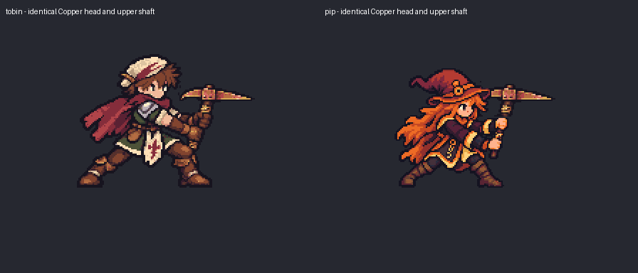
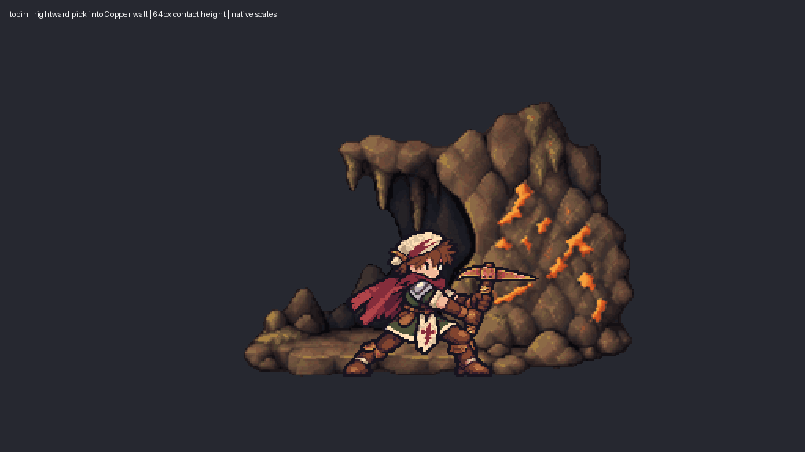
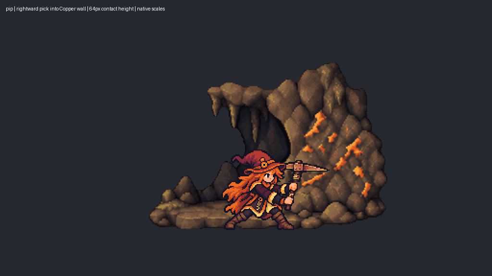

Wall pick contact review
Both heroes present the same authored Copper pick head and upper handle into the wall at 64 pixels above ground. These are contact drafts awaiting review. Lower handles and gripping fingers remain baked into each hero; full equipment separation and the wind-up/recovery sequence are unfinished.



Original combat controls character style. Hero and wall use native scale. No artwork is rotated or drawn in code.
Low sickle draft | Lateral axe draft